Лабораторная работа №5
Архитектура компьютеров
Безлепкина Т.И.
Российский университет дружбы народов, Москва, Россия
06 марта 2026
Информация
Докладчик
- Безлепкина Татьяна Игоревна
- Студентка НКАбд-01-25
- Таня
- Российский университет дружбы народов
- 1032253539@rudn.ru
.jpg)
Цель работы
Получение практических навыков работы с менеджером паролей pass и системой управления конфигурационными файлами chezmoi, а также их интеграция с Git и браузером для безопасного хранения и синхронизации данных.
Задание
- Установить и настроить pass с GPG-ключом, подключить Git-репозиторий
- Добавить и просмотреть пароль, установить браузерное расширение
- Установить chezmoi, создать репозиторий dotfiles, инициализировать и проверить изменения
Актуальность темы
В условиях роста числа онлайн-сервисов хранить пароли в голове или на бумаге небезопасно и неудобно. Менеджеры паролей стали необходимостью для защиты данных и экономии времени.
Объект и предмет исследования.
- Объект: Процесс безопасного хранения учетных данных и управления конфигурациями в Linux.
- Предмет: Менеджер паролей pass и система управления dotfiles chezmoi.
Научная новизна.
Комплексный подход, объединяющий GPG-шифрование, версионирование паролей через Git и автоматическое развертывание конфигураций рабочей среды (“конфигурация как код”).
Практическая значимость работы.
Возможность быстро развернуть защищенное и персонализированное рабочее окружение на любом компьютере одной командой, автоматически синхронизируя пароли и настройки.
Теоретическое введение
- Pass — менеджер паролей, использующий GPG-шифрование и Git для синхронизации. Интеграция с браузером осуществляется через browserpass.
- Chezmoi — инструмент для управления конфигурационными файлами (dotfiles) через Git, позволяющий разворачивать настройки на нескольких машинах.
Выполнение лабораторной работы
Менеджер паролей pass и расширение pass-otp устанавливаются стандартным способом для Fedora (рис. @fig:001)
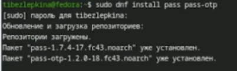
Ключи GPG (рис. @fig:002)
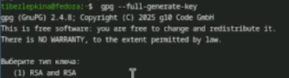
После установки необходимо инициализировать хранилище паролей и привязать его к GPG-ключу (рис. @fig:003)
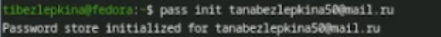
Для отслеживания изменений и синхронизации паролей создаем локальный Git-репозиторий в хранилище (рис. @fig:004)
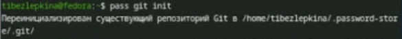
Привязываем локальный Git-репозиторий к репозиторию на GitHub для синхронизации паролей (рис. @fig:005)
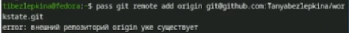
Отправляем локальные изменения в удаленный репозиторий и загружаем обновления (рис. @fig:006)
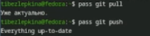
Подключение репозитория (рис. @fig:007)
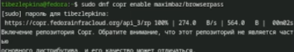
Установка browserpass (рис. @fig:008)
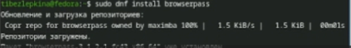
Добавление пароля (рис. @fig:009)
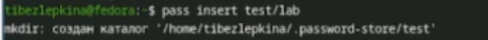
Просмотр пароля (рис. @fig:010)
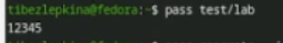
Генерация пароля (рис. @fig:011)
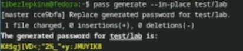
Установка дополнительного ПО (рис. @fig:012)
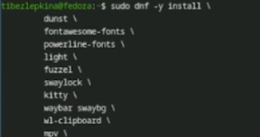
Подключение репозитория шрифтов (рис. @fig:013)
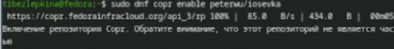
Поиск шрифтов (рис. @fig:014)
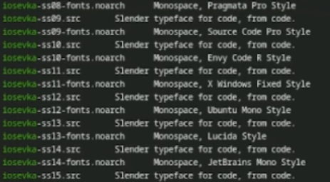
Установка шрифтов (рис. @fig:015)
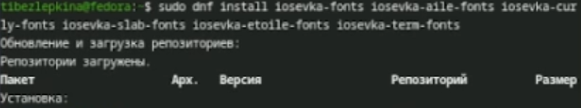
Установка chezmoi (рис. @fig:016)
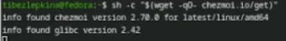
Создание репозитория dotfiles (рис. @fig:017)
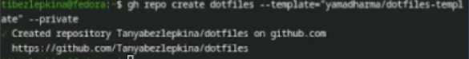
Инициализация chezmoi (рис. @fig:018)
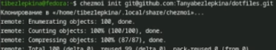
Проверка изменений (рис. @fig:019)
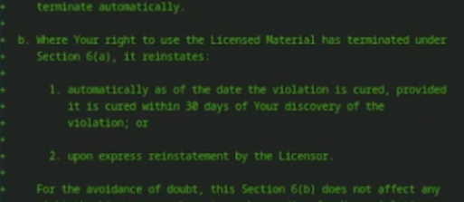
Демонстрация команд для работы на нескольких машинах(chezmoi init — инициализация репозитория, chezmoi diff — проверка изменений, chezmoi apply -v — применение конфигурации) (рис. @fig:020)
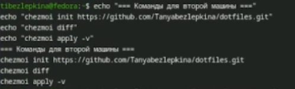
Быстрая настройка новой машины (рис. @fig:021)
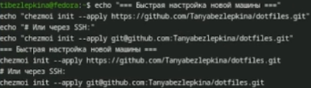
Ежедневные операции с chezmoi (рис. @fig:022)
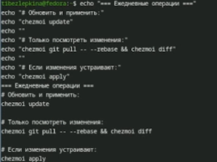
Настройка автоматической синхронизации (рис. @fig:023)
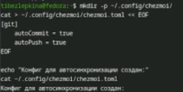
Вывод
В ходе работы освоены инструменты безопасного хранения паролей (pass) и управления конфигурациями (chezmoi). Получены навыки работы с GPG-ключами, синхронизации через Git/GitHub, интеграции с браузером и развертывания dotfiles на нескольких машинах.